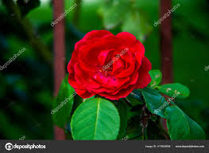

La flor que encarna amor, belleza y misterio eterno.
Nombre científico

La rosa roja pertenece al género Rosa dentro de la familia Rosaceae. Su nombre científico más común es Rosa gallica. Existen miles de variedades híbridas, pero la Rosa gallica es una de las más antiguas y cultivadas desde tiempos romanos.
Historia
El cultivo de la rosa roja se remonta a más de 5.000 años. En la antigua Persia y Mesopotamia ya era símbolo de amor y belleza. Los griegos la asociaron con Afrodita, diosa del amor, mientras que en Roma fue emblema de pasión y sacrificio. Durante la Edad Media, su cultivo se extendió por Europa, convirtiéndose en una flor sagrada y medicinal.
Utilidad
La rosa roja tiene múltiples usos: en perfumería se aprovecha su aceite esencial para crear fragancias únicas; en cosmética se usa su extracto por sus propiedades hidratantes y antioxidantes; en gastronomía, sus pétalos se emplean en dulces y tés aromáticos. También tiene valor ornamental y cultural, siendo símbolo de amor y respeto.
Beneficios
Las rosas rojas poseen propiedades antiinflamatorias, antioxidantes y calmantes. Su aroma ayuda a reducir el estrés y la ansiedad, mientras que su aceite esencial se usa en terapias de relajación. Además, sus infusiones pueden mejorar la digestión y fortalecer el sistema inmunológico.